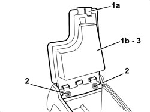
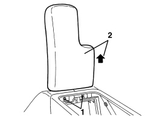
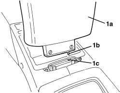

7040L33 ARMREST ON TUNNEL COVER WITH ODDMENTS COMPARTMENT - R.R.
- Path
- Procedures > 70 FITTINGS > 7040 BODY INTERIOR FITTINGS AND TRIM > 7040L PASSENGER COMPARTMENT FLOOR COVERING > 7040L33 ARMREST ON TUNNEL COVER WITH ODDMENTS COMPARTMENT - R.R.
- Kind
- repair procedure (removal / refitting; the operation number is the code)
- Applies to
- all engines; all production periods
- Interactive page
- https://sloeber94.github.io/elrnDB-aBrrSpdr/en/#/946002647
Applies to: all engines; all production periods
 Removing
Removing
 Refitting
Refitting1. Release the retainer (1a) and lift up the armrest and oddments pocket (1b).
2. Undo the bolts.
3. Keep the armrest and oddments pocket.

Applies to: all engines; all production periods
Refitting
Removing- Check that the armrest and oddments pocket are not damaged.
- Position the armrest and oddments pocket.
- Tighten the bolts.
- Close the armrest and oddments pocket.
Applies to: engines: 2.2 JTS, 3.2 JTS; all production periods; only with equipment: Spider
Removing
RefittingOp. 7040L76 CENTRE REAR ODDMENTS COMPARTMENT - R.R.
- Open the armrest.
1. Undo the bolts via the opening left free by the oddments compartment.
2. Raise the armrest and remove it.

Applies to: engines: 2.2 JTS, 3.2 JTS; all production periods; only with equipment: Spider
Refitting
Removing- Check that the armrest is not damaged.
1. Place the armrest (1a) in position inserting the end (1b) in the housing (1c).

Applies to: engines: 2.2 JTS, 3.2 JTS; all production periods; only with equipment: Spider
- Tighten the bolts.
- Close the armrest.